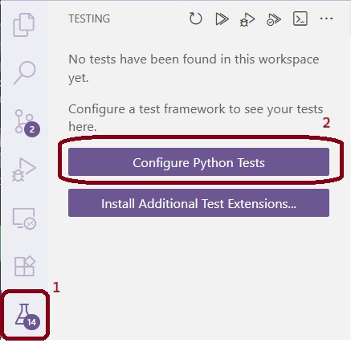
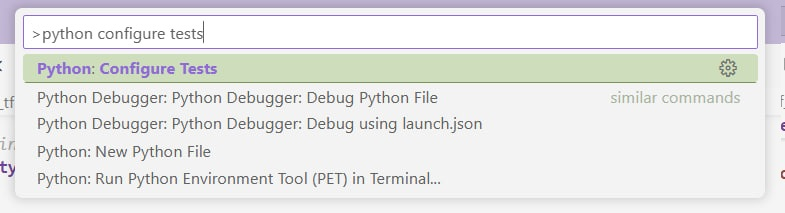
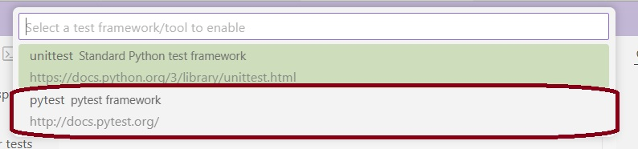
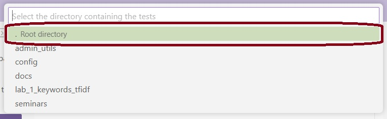
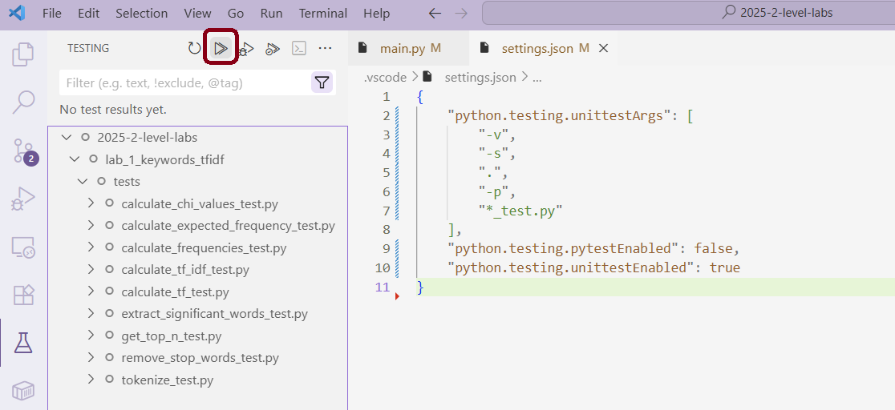
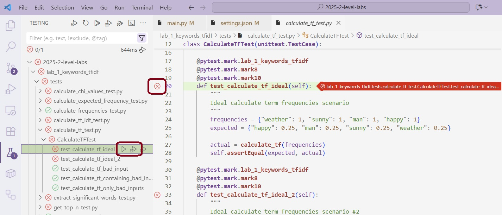
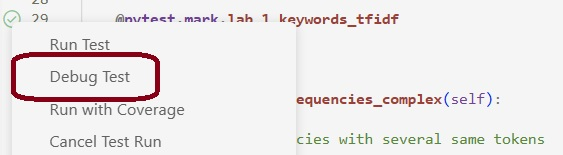
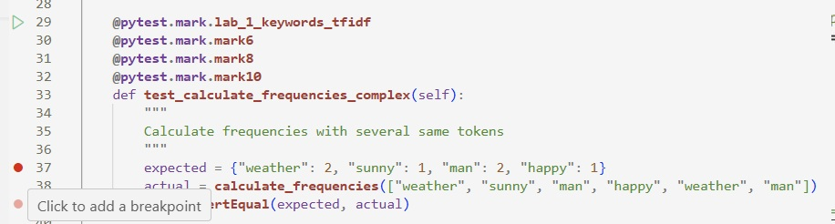
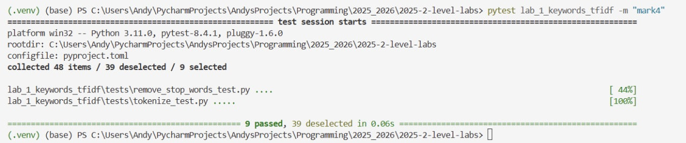

Запуск тестов: локально и в CI
Настройка тестов в среде разработки Visual Studio Code
Чтобы настроить тесты локально, Вам потребуется выполнить следующие шаги:
Установите зависимости для тестов:
python -m pip install -r requirements_qa.txt
Important
Удостоверьтесь, что у Вас активировано виртуальное окружение.
Это делается через запуск команд .\venv\Scripts\activate
(Windows) или source venv\bin\activate (macOS) в терминале.
Создайте новую конфигурацию:
Чтобы создать новую конфигурацию, откройте вкладку Testing на левой панели Visual Studio Code и нажмите кнопку Configure Python Tests button.

Иначе Вы можете открыть настройки конфигурации через командную строку Visual Studio Code. Используйте сочетание клавиш Ctrl + Shift + P, чтобы открыть командную строку. Наберите Python: Configure Tests в строке и выберите данную опцию в списке команд.

Теперь Вы можете начать конфигурацию самих тестов.
Выберите опцию
pytest:
Выберите папку для запуска тестов:
Вы можете использовать корневую папку проекта или папку нужной Вам лабораторной работы.

После выбора Visual Studio Code откроет файл settings.json с параметрами конфигурации, а все тесты будут расположены на вкладке Testing.
Запуск тестов
Чтобы запустить все тесты, нажмите кнопку Run Tests, как показано на скриншоте ниже.

Иногда Вам может понадобиться запустить не все тесты, а выборочно некоторый конкретный тест, папку с тестами или файл с тестами. Вы можете сделать это, нажав кнопку Run Test рядом рядом с названием теста (или файла/папки с несколькими тестами), который Вы хотите запустить, на вкладке Testing. Также это можно сделать в самом файле с тестами, нажав на крестик/галочку (кнопку Run Test) на строке инициализации теста, как показано на скриншоте ниже.

Режим отладки (debugging)
Если Вы хотите найти ошибки в коде, Вам понадобится запустить нужный тест в режиме отладки. Для этого Вы можете нажать на кнопку Debug Test с силуэтом жука рядом с тестом на вкладке Testing или нажать правой кнопкой мыши на кнопку Run Test в самом файле с тестом и выбрать опцию Debug Test.

Чтобы начать процесс отладки, Вам понадобится поставить точку останова (breakpoint) в Вашем коде или в самом тесте. Точки останова — это специальные маркеры, которые Вы можете поставить на потенциально уязвимые строчки кода. При запуске теста в режиме отладки программа приостановится на указанной строчке, и Вы сможете посмотреть на текущее состояние переменных, а также пошагово посмотреть, как работает код.

Запуск тестов в терминале
Important
Удостоверьтесь, что у Вас активировано виртуальное окружение. и установлены зависимости.
Команда для запуска всех тестов выглядит так:
python -m pytest
Чтобы запускать тесты на определённую оценку, используйте маркеры
mark4, mark6, mark8 или mark10. Например, так:
python -m pytest -m mark8
Чтобы запускать тесты определённой лабораторной работы, добавьте название папки после команды pytest.
Например, вот так выглядит команда и полный вывод для запуска тестов первой лабораторной работы на оценку 4:

Hint
Если Вы активировали виртуальное окружение и установили необходимые зависимости, Вы можете использовать pytest без вызова python.
Запуск тестов в CI
Запуск тестов и других проверок в CI происходит в открытом Вами Пулл Реквесте.
В самый первый раз проверки запускаются в тот момент, когда Вы открываете Пулл Реквест. После этого проверки запускаются только тогда, когда вы делаете push изменений в Ваш форк. Проверки CI запускаются автоматически, обычно через минуту.
Чтобы посмотреть результаты проверок, зайдите в Ваш Пулл Реквест, нажмите на кнопку details интересующей Вас проверки, а затем на интересующий Вас шаг проверки.
Вы можете также посмотреть проверки через вкладку Checks в Вашем Пулл Реквесте.


Если проверки в CI не запускаются, удостоверьтесь, что Вы приняли приглашение в группу на GitHub. Обычно их высылают организованно в начале курса.